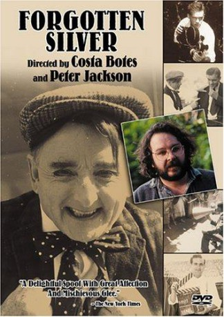

#4574 Kein Oscar für Mr. McKenzie
Alternativ: Forgotten Silver
 
 IMDB-Wertung: 7.6 / 10
IMDB-Wertung: 7.6 / 10  Metascore: 0
Metascore: 0 
Forgotten Silver is a mockumentary which details the prodigious life of "lost" filmmaker Colin McKenzie and his incredible advances that were lost to history...until now. This supergenius filmmaker, posthumously inducted into the pantheon of cinema greats, made incredible advances in filmmaking technology, supposedly making a talkie in 1908 and using color film in 1911, but madness and poverty and the usual industry tolls drove him into obscurity.
Jahr: 1995
Dauer: 55 Minuten
FSK:
Land: Neuseeland Studio: Koch MediaTonspuren:
Untertitel: Deutsch,
Auflösung: 1080p (1920x1080) Größe: 4474 MB
Genre: Komödie
Regisseur: Costa Botes,  Peter Jackson
Peter Jackson
Drehbuch: Stephan Lacant
Soundtrack:
Darsteller:
 Jeffrey Thomas als Narrator
Jeffrey Thomas als Narrator Peter Jackson als Himself
Peter Jackson als Himself- Leonard Maltin als Himself - Film Historian
 Sam Neill als Himself - Actor / Director
Sam Neill als Himself - Actor / Director- Harvey Weinstein als Himself - Miramax Films
- Richard Taylor als First Aviator , uncredited
- Costa Botes als Himself - Film Maker
- Marguerite Hurst als Herself
- Johnny Morris als Himself - Film Archivist
- John O'Shea als Himself
- Lindsay Shelton als Himself
- Isaac Lucas als Policeman
- Beatrice Ashton als Hannah McKenzie , uncredited
- Peter Corrigan als Stan the Man , uncredited
- Julie Holmes als Market girl Extra , uncredited
- Charlie McClellan als Soldier firing machine gun in Gallipolli , uncredited
- Sarah McLeod als May Belle , uncredited
- George Port als Undertermined role , uncredited
- Thomas Robins als Colin McKenzie , uncredited
- Richard Shirtcliffe als Brooke McKenzie , uncredited
- Gallina Thurshead als Undertermined role , uncredited
- Davina Whitehouse als Herself , uncredited
Datei: X:\1995\Kein Oscar für Mr. McKenzie (1995, FSK, 1920x1080).mkv seit 17.10.2016
Festplatte: HD 1992-1995
 Es gibt insgesamt 85 Filme in der Gruppe '1995'
Es gibt insgesamt 85 Filme in der Gruppe '1995'